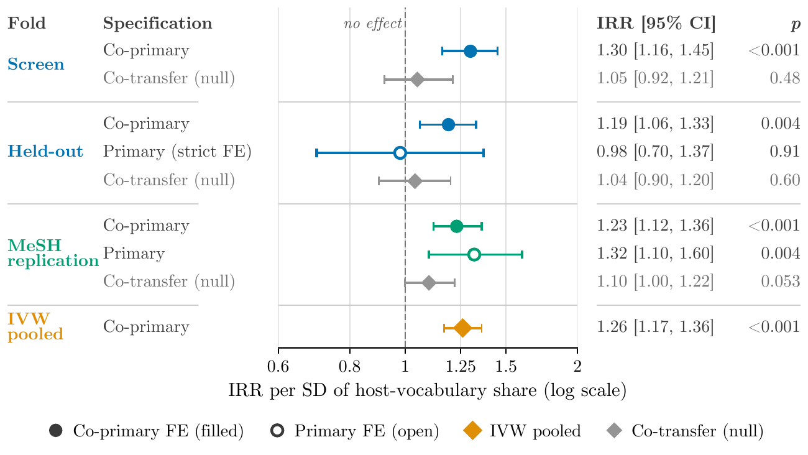

Host vocabulary predicts whether new scientific concepts take root across disciplinary boundaries
When a new scientific concept first appears in a disciplinary subfield, does the vocabulary of its initial partner terms predict whether newcomer scientists will adopt it? Across 426 emerging concepts and 462,812 works from OpenAlex, the answer is yes: a one-standard-deviation increase in the share of entry partners belonging to the host field's vocabulary raises five-year newcomer uptake by 23% (incidence-rate ratio 1.23, 95% CI 1.12 to 1.36), replicated on an independent population of 191 MeSH biomedical concepts.
Contributions
Host-entry grafting predicts adoption
When a concept enters a new subfield, the share of its entry partners belonging to the host vocabulary predicts five-year newcomer uptake. Pre-registered and replicated on an independent MeSH biomedical population (co-primary IRR 1.23, 95% CI 1.12 to 1.36; verdict: REPLICATED). Development-set estimates are concordant: Screen IRR 1.30, Held-out IRR 1.19.
Outcome-blind concept dataset
A semantically grounded, outcome-blind dataset of 426 emerging concepts with 462,812 OpenAlex works across physics, computer science and biomedicine, plus an independent check population of 191 MeSH biomedical concepts.
Host-specific effect through two margins
The host-vocabulary effect is host-specific rather than a proxy for generic concept accessibility, and it operates through both the extensive margin (whether uptake starts, +6.4 pp per SD) and the intensive margin (its magnitude, IRR 1.18). No detectable variation by origin field.
Structural precursors of emergence
Persistent-neighbour closure is lower before sustained uptake (S = −1.07, Holm p = 0.015; development-set estimate). General closure fails on the Held-out fold. The effect is not Burt brokerage: emerging concepts sit in more constrained, not less constrained, ego networks.
Diffusion typology and adopter enrichment
A stable two-type typology (localised vs. broad), an expansion-before-diffusion ordering (25 of 26 cases), and adopter-level enrichment for prior exposure to the concept's entry partners (OR 3.09; Screen fold, not independently confirmed).
Method

Data
The study tracks 426 emerging scientific concepts, assembled as an outcome-blind pool from arXiv noun phrases that first appeared in OpenAlex between 2005 and 2016 (code). Of these, 366 are main emerging concepts (247 Screen fold, 119 Held-out fold) and 60 are stationary references. A logistic-regression classifier (F1 = 0.82, AUC = 0.89) and a variant merger (B-cubed F1 = 0.78) grounded every concept (code). The pool is dominated by physics and computer-science concepts from arXiv.
An independent biomedical arm of 191 concepts was drawn from new MeSH descriptors (code). The combined corpus comprises 462,812 unique OpenAlex works (code).
Co-word network
From a design-weighted background sample of 259,716 works, 25 yearly three-year-window co-occurrence snapshots were built (approximately 27,000 nodes and 84,000 edges per snapshot), with association-strength edge weights and Leiden community detection (code). For each concept-keyword node, OpenAlex subfield-by-time-block publication counts supplied the host-vocabulary share used in RQ2, covering 78.7% of host co-occurrence weight across 1,372 nodes.
RQ1: Structural precursors of emergence
Sustained uptake is defined as reaching at least 20 papers per year with at least 20 percentile points of co-word network strength gain. Each concept showing sustained uptake is matched 1:1 to a control from the same first-appearance band and origin field. The standardised mean difference (Cohen's S) in closure measures during the pre-onset window is the estimand, with bootstrap confidence intervals (B = 2,000) and Holm-corrected p-values. Four closure variants were tested: general closure, turnover-residualised closure, persistent-neighbour closure (restricted to top-20 neighbours present in consecutive years), and Burt constraint.
RQ2: Host-entry grafting
A host-entry event is the first year a concept appears in a non-origin subfield together with at least five co-occurring partner terms. The host-vocabulary share measures the tag-weighted mean of each partner's pre-entry publication share in the host subfield. The outcome is five-year newcomer uptake: host-subfield papers by author-disjoint newcomers.
Poisson pseudo-maximum-likelihood (PPML) regression with concept-clustered standard errors tests whether host-vocabulary share predicts uptake. Two specifications were pre-registered: a primary with concept×year and host×year fixed effects, and a co-primary with concept, entry-year and host fixed effects (used when the primary drops below 30 concept clusters). Co-transfer (fraction of partners that were origin companions) is included as a second regressor in both.
Results
Host-entry grafting
Margin decomposition
The host-vocabulary effect operates through both margins (code). The extensive margin (whether any uptake starts) accounts for 38% of the total effect (95% CI 21% to 55%): the pooled effect is +6.4 percentage points per SD (95% CI 4.8 to 8.1), approximately a 13% increase relative to the 51% base rate. The intensive margin (count of newcomer papers given uptake started) accounts for the remaining 62%, with a pooled IRR of 1.18 (95% CI 1.10 to 1.27).
The host-vocabulary gradient is host-specific. Adding generality controls retains 97% of the coefficient (IVW retention 0.97, 95% CI 0.81 to 1.10). The Balassa-index lift measure is also significant (IVW IRR 1.34, 95% CI 1.23 to 1.46), though its within-fixed-effect correlation with the log of the continuous share is 0.997, so the lift test confirms the continuous measure rather than adding independent evidence (code). The Wald test for origin-field dependence is null (p = 0.64).
Structural precursors of emergence
On the Held-out fold (a development-set estimate), only persistent-neighbour closure survives Holm correction: S = −1.07, 95% CI −1.86 to −0.29, Holm p = 0.015. General closure is not significant (Holm p = 0.147). Turnover-residualised closure is not significant (Holm p = 0.635). Burt constraint is positive (S = +0.11, 95% CI 0.02 to 0.19), indicating that emerging concepts sit in more constrained, not more brokered, ego networks (code, held-out check).
The MeSH replication of closure is directional under a sensitivity label (D = −0.42, Holm p = 0.039, n = 29) but null under the primary label (D = −0.09, Holm p = 0.677, n = 15) (code). Structural precursors add no predictive value for sustained uptake beyond frequency, burst, degree and entropy baselines (logistic AUC 0.89 versus 0.88).
Adopter-level mechanism
Adopters are more likely to have prior corpus exposure to the concept's entry partners than matched non-adopters (conditional logistic regression: OR 3.09, prevalence 0.79 versus 0.61; 95% CI 2.32 to 4.28; 1,013 matched strata, 422 entries, 109 concepts; Screen fold, not independently confirmed) (code). Enrichment follows a vocabulary gradient: FOREIGN partners OR 2.88, ADJACENT OR 1.91, NATIVE OR 1.47.
Diffusion typology
A data-derived two-type typology (localised, n = 136, vs. broad from the start, n = 66; k-medoids, bootstrap minimum Jaccard 0.86) is stable, though it does not separate outcomes better than an entropy-only baseline. Among concepts with both observable onsets, expansion precedes diffusion in 25 of 26 pooled main-arm cases (proportion 0.96, 95% CI 0.81 to 1.00, p = 0.004) (code, unseen data check).
Null findings
Co-transfer is null in all specifications and populations. The breadth-prediction screen (does openness predict how many subfields a concept reaches?) found no effect beyond growth and level baselines (code). The link between pre-emergence closure and later host-entry composition is null (partial correlation 0.025 Screen, 0.053 Held-out, both CIs including zero).
Figures





Limitations
The Held-out fold was used during pipeline development: event counts, population sizes and gating decisions were computed on both folds before grafting outcomes were read. Estimates on both main-arm folds are development-set estimates, not true held-out confirmations. The independent evidence comes from the MeSH replication.
The concept pool is dominated by physics, physical-sciences and computer-science concepts from arXiv. The MeSH population covers only biomedicine-to-biomedicine entries. Generalisation to social sciences, humanities or engineering is untested.
The fully saturated specification with concept×year and host×year fixed effects is inconclusive on the Held-out fold (IRR 0.98, 30 clusters). The MeSH replication and development-set estimates rest on the co-primary specification, which absorbs less confounding.
87% of co-primary Screen events involve a single entry-year paper. The pooled multi-team effect is positive (IRR 1.28, 95% CI 1.11 to 1.48), but the Held-out fold alone is underpowered for this test.
Host-vocabulary share predicts the count of newcomer papers and the probability of any uptake, but binary establishment (at least five newcomer papers in at least three of five years) is null on the Held-out fold (p = 0.16). The effect is graded, not threshold-based.
The cluster-robust variance estimator rejects 10% to 11% of null shuffles in simulation (target 5%). Wild-cluster bootstrap and permutation tests give consistent results (Held-out wild p = 0.012, permutation p = 0.026), but standard p-values should not be taken at face value.
The Balassa-index lift measure has a within-fixed-effect correlation of 0.997 with the log of the continuous host-vocabulary share. The lift test confirms the continuous measure rather than providing independent evidence for host-specificity.
The adopter-level enrichment (OR 3.09) is Screen-fold only, not independently confirmed. The design cannot separate absorptive capacity from topical proximity.
The Held-out fold was used in pipeline development, so the closure result is a development-set estimate. The Held-out matching falls back to Screen controls for 17 of 25 unique controls. The MeSH closure result is directional under the sensitivity label but null under the primary label.
Additional code artifacts
- Code: Labelled science phrases and new-term pool
- Code: Prior art and plan for concept-spread study
- Code: Do concept citation chains survive in new fields?
- Code: Checking the report's numbers and the closure effect
- Code: Check every paper number against its source
- Code: Where the host-vocabulary finding sits in the literature
- Code: Paper figures drawn straight from result files